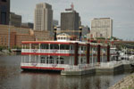

The hotel is holding a block of rooms at the reduced rate of $119 per night, plus tax (13.625%) until September 3, 2012. Reserve your room now.
The hotel guarantees the same room rate for up to three nights prior to Sept 30 and three nights after Oct 2 based on availability. The Twin City Marathon and related events are Oct 6 and 7. Hotels will begin to fill up a few days before that. Make your reservations early.
| University of Minnesota Centennial Showboat | |
|  |
| | | |